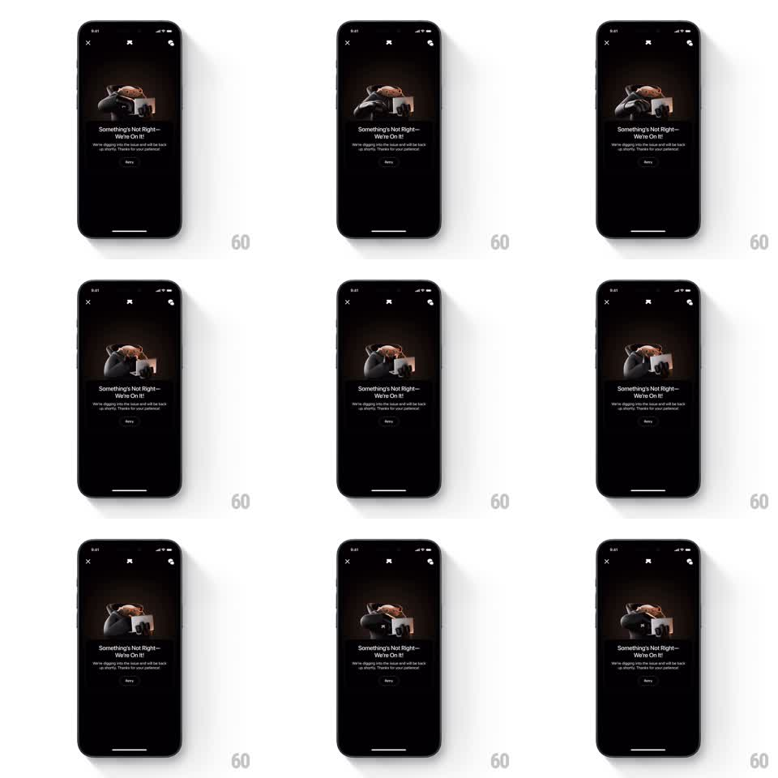

Media
Frame-by-frame

Rebuild this animation 1:1: Ultrahuman's error screen - a 3D mascot lounging over its laptop idles with a slow loop while "Something's Not Right - We're On It!" waits beneath.

Rebuild this animation 1:1: Ultrahuman's error screen - a 3D mascot lounging over its laptop idles with a slow loop while "Something's Not Right - We're On It!" waits beneath. ## Integration Integration: stack-agnostic spec - springs given as stiffness/damping, timed motions as duration + curve; map every value to your framework and animation library of choice. ## Scene Dark error screen: close/back icons top, the mascot render center (a creature draped over furniture with a laptop), "Something's Not Right - We're On It!" headline, explainer copy, small Retry pill. ## Motion spec Pattern: idle character loop, ~4s. - The mascot breathes: body rises and falls subtly (scale y +-2%, ~2s cycle) with a matching head drift. - Occasional secondary motion - a slow head tilt or paw adjust every other loop - keeps it alive without busyness. - A warm glow under the mascot breathes in sync (alpha +-10%). - Text and Retry button are static. ## Calibration - The loop is calm; this is an apology screen, not a celebration. - Motion must be genuinely looping - no visible reset cut. ## Reduced motion Static mascot with no glow pulse. ## Don't miss - The mascot faces its laptop, not the user - it is working on the problem, which is the whole joke. - Retry never pulses or draws attention to itself; the mascot carries the screen.